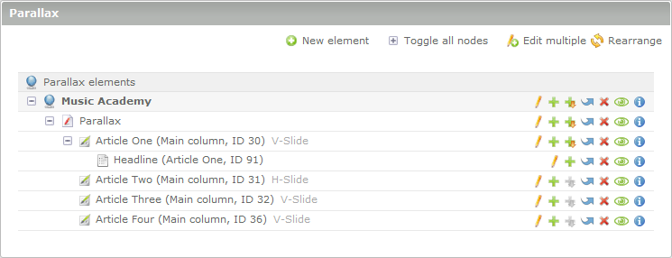

Über Parallax
Parallax ist eine auf jQuery basierende Contao Extension und funktioniert so wie Du es von Contao gewohnt bist. Übersichtlich, schlank und für jeden zu verstehen. Zum Start unterstützen wir eine große Anzahl an Browsern und Betriebssystemen.
Du benötigst etwas Erfahrung im Umgang mit HTML(5) und CSS(3), aber keine Kenntnisse in JavaScript bzw. jQuery. Parallax für Contao ist schlank im Aufbau, mächtig in der Funktion. Und bei einfachster Bedienbarkeit lässt es jeden Freiraum für Deine Ideen und Kreativität.
Auf Anfrage oder im Falle eines Lizenzkaufs, senden wir Ihnen die Endbenutzer-Lizenzvereinbarungen (EULA) zu.
Systemvoraussetzungen
Parallax für Contao benötigt eine kleine Auswahl an Extensions oder Bibliothekten, bitte installiere diese immer nur über das Contao Extension Repository.
- Contao 2.9.x oder höher
- jQuery 1.7.2 oder höher (bereits Bestandteil von Contao 3)
- MultiColumnWizard 3.2.0
Einfache Startup-Anleitung
- Installiere die Erweiterung
- Erstelle Deine Standard-Theme und Layout
- Aktiviere "jQuery" im Layout
- Füge Seiten zum Seitenbaum hinzu
- Füge so viele Artikel in Deine Seite ein, wie Du animieren möchtest
- Füge ein paar Inhaltselemente in Deine Artikel ein
- Gehe in den Parallax Menüeintrag
- Füge ein neues Element ein, wähle Deine Root-Seite und setzen die Option "Scrollbar aktivieren"
- Fügen ein weiteres Element hinzu und wähle die normale Seite unter "Animationsseite" aus
- Füge die beinhaltenden Artikel auf dieser Seite hinzu. Setze die Animationsdauer für den Anfang auf einen Wert von z.B. 500
- Die Animation für den Artikel ist nun aktiv
- Animierende Elemente sollten mit position:absolute platziert werden, position:relative nur in Ausnahmefällen einsetzen
- Die Höhe von 1000px für die Artikel muss am Ende durch eigene Werte überschrieben werden!
Hinweis
Die Parallax Extension benötigt derzeit zwingend eine bestimmte URL-Konstellation:
- Die Startseite darf keinen "index" Alias haben
- Keine Weiterleitung auf eine "index" Seite
Benötigter HTML-Quelltext
Die Parallax Extension benötigt ein festes Grundgerüst an Elementen, ID's und Klassen die für einen sauberen Betrieb der Extension nicht verändert werden dürfen. Ganz wichtig ist, das Contao auch weiterhin ID's und Klassen dynamisch platzieren kann. Es sollten daher diese Bereiche der Artikel- und Inhaltselement-Templates nicht angepasst werden.
Beispiel einer eigenen Animation
Versionshistorie
parallax
1.4.0
- Volle Contao 3.2 Unterstützung
- Kleine optische Verbesserungen der Baumansicht für Contao 3
- Implementierung der Funktionalität, um mit einem Link an eine beliebige Stelle zu scrollen
- Kleine Optimierungen der Core Hilfsfunktionen
- Fehlerkorrektur der Berechnungen in Javascript
1.3.1
- Kleine Optimierungen für eine bessere Zusammenarbeit mit der Pro Version
- Fehlerbehebung für den Internet Explorer 8
1.3.0
- Optimierung der Contao 3 Integration
- Optimierung der Javascript-Performance
- Fehlerkorrektur der Berechnungen im Javascript
- Einführung einer CSS-Klasse für Inhaltselemente und Artikel #5
- Fehlerbehebung für Apple Safari und Magic Mouse #9
- Integration von Helpwizards zum besseren Verständnis der Animationen
- Generelle Optimierungen für Artikel mit einer dynamischen Höhe
- Fehlerbehebung der xhtml Templates
- Optimierung der Höhenberechnung bei der Kombination eines horizontalen Slides und des letzten Artikel
- Fehlerbehebung der springenden Scrollbar
- Zwei neue Animationen für die Positionierung von Elementen außerhalb des Viewports
- Implementierung einer Hilfsfunktion für Programmierer um die Berechnung der Elemente neu auszulösen
- Überarbeitung der Berechnung des letzten Artikels in Kombination mit dem fixierten Header
- Optimierung der Berechnung für die maximale Parallax-Auflösung
- Kleine allgemeine Fehlerkorrekturen
1.2.0
- Volle Contao 3.1 Unterstützung
- Entfernung nicht mehr notwendiger jQuery Abhängigkeiten in Contao 3
- Fehlerbehebung der Scrollbar, wenn der letzte Artikel eine dynamische Höhe hat
- Konfiguration von Einschränkungen der Redakteure hinzugefügt
- Entfernung des Infotexts und Hilfswizard für den schnellen Wechsel zwischen Parallax und Contao Elementen hinzugefügt
- Unterstützung von fix positionierten Headern mit neuer Berechnung, Sprungmarkern und mehr
- Aufsplittung der Javascript Konfiguration in verschiedene Module für eine bessere Performance, eine höhere Flexibilität und als Vorbereitung der zwei Lizenzen "Lite" und "Pro"
- Entfernung der Navigation, der horizontalen Slides und responsiver Unterstützung in der Lite Version
- Minimierung von Javascript Code aus der Parallax Extension
- Fehlerbehebung von kopierten Parallax-Elementen und falsch zugewiesenen ID's
- Kleinere Korrekturen und DCA-Optimierungen
1.1.0
- Anpassungen für Contao 3.0
- Entfernung der Templateauswahl in der Parallax Navigation
- Fehlerbehebung der falschen Höhenberechnung - dynamische Artikel mit padding und box-sizing:border-box
1.0.1
- Optimierung der Tastatur-Unterstützung
- Auslieferung einer Parallax CSS mit allen notwendigen Styles
- Konfiguration der Ladegrafik im Backend
- Entfernung der Parallax Klasse im Body
- Entfernung der Scrollbar wenn Parallax nicht mehr aktiv ist
- Optimierung der Tastaturbefehle in Browsern kleiner als IE8
parallax-deps (Pro Version)
1.2.0
- Volle Contao 3.2 Unterstützung, inklusive eines universellen Updatescripts für die Anpassung aller Bildpfade
- Beheben der Problematik mit dem URL Suffix
- Beheben eines Fehlers der Standard Mediaquerys für die Hintergrundbilder
1.1.1
- Auslagern der DCA Klassen im "parallaxImagePicker" um Fehler in Contao 3.1.4 zu vermeiden
- Optimieren der Backendmaske für die Auswahl der Hintergrundbilder
- Fehlerbehebung bei der Vererbung von Pfaden für die Hintergrundbilder
- Fehlerkorrektur der PHP Klassenvererbung in der Navigation
1.1.0
- Optimierung der Contao 3 Integration
- Optimierung der Javascript-Performance
- Fehlerkorrektur der Berechnungen im Javascript
- Optimierung der Höhenberechnung bei der Kombination eines horizontalen Slides und des letzten Artikel
- Implementierung einer Hilfsfunktion für Programmierer um die Berechnung der Elemente neu auszulösen
- Kleine allgemeine Fehlerkorrekturen
1.0.0
- Volle Contao 3.1 Unterstützung
- Unterstützung von fix positionierten Headern mit neuer Berechnung, Sprungmarkern und mehr
- Aufsplittung der Javascript Konfiguration in verschiedene Module für eine bessere Performance, eine höhere Flexibilität und als Vorbereitung der zwei Lizenzen "Lite" und "Pro"
- Entfernung der Navigation, der horizontalen Slides und responsiver Unterstützung in der Lite Version
- Repository für Pro-Module wie "parallaxHorizontal", "parallaxImagePicker", "parallaxNavigation" and "parallaxResolution" hinzugefügt
- Minimierung von Javascript Code aus der Parallax Extension
- Kleinere Korrekturen und DCA-Optimierungen
Screenshots
Parallax - Seitenbaum
Parallax - Konfiguration des Startpunkts